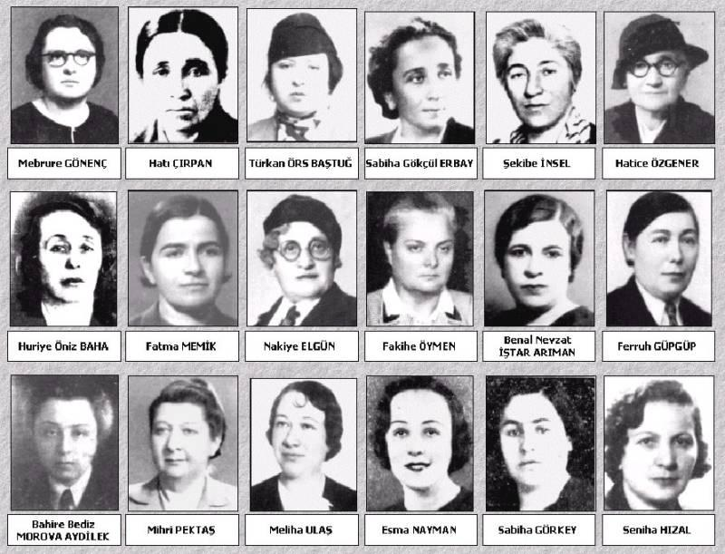

- Anasayfa
- Siyasette Türk Kadınları
- Bilimce Türk Kadını
- Savaşta Türk Kadını
- İletişim
Cumhuriyet dönemindeki ilklere imza atan başarılı Türk kadınları kendisinden sonraki bir çok kadının ilham kaynağı olmuştur.
İşte ilklere imza atp kadınların başarılarını temsil eden Türk kadınları....
Muhasebeci, banka müdürü ve ekonomi doktoru : İclal Ersin
İclal Ersin, ilk kadın muhasebeci, ilk kadın banka müdürü ve ekonomi doktorudur.
imzasını atan 1928 yılında Adana Türkiye İş Bankası Şubesi'nde muhasebeci olarak göreve başladı. İclal Ersin, Türkiye İş Bankası'nın ilk imza sahibi kadın elemanı. İlk kadın Şube Müdürü. Kandilli Lisesi'nde okurken İş Bankası'nda çalışmaya başladı. Kısa süre sonra Muhasebe Müdürü olup, imza yetkisi alarak, banka tarihine geçti. İş Bankası'nın kurucusu Celal Bayar tarafından Atatürk'e ilk kadın muhasebeci olarak tanıtılınca, Atatürk'ün ilgisini çekmiş, en büyük arzusunun yurtdışında eğitim almak olduğunu söylemesi üzerine, Türk kadınının gelişmesine ve iş yaşamında yer almasına çok önem veren Atatürk tarafından 1939 yılında Cenevre'ye eğitime gönderildi.
Türkiye'de meslek gelirlerinin vergilendirilmesi başlıklı tezini Fransızca olarak hazırlayıp doktorasını tamamlar ve 1941 yılında Türkiye'ye dönüp Türkiye'nin ilk iktisat doktoru ünvanını elde eder. İş Bankası'nın Ankara Merkez Şubesi'nin Teftiş Servis Şefliği, İstanbul-Beyoğlu ve Galata şubelerinde kontrolörlük görevlerinin ardından, 1953 yılında açılan İş Bankası Nişantaşı Şubesi Müdürlüğü görevine atanır ve on yıl süreyle bu görevde kalır. Böylece Türkiye'nin ilk kadın banka müdürü ünvanını da elde etmiş olur.
Atatürk'le ilgili bir anısı
Ankara'da bir banka yemeğinde, ‘‘İlk imza sahibi kadın elemanımız’’ diye takdim edilmiş Atatürk'e. Onu uzun uzun ‘‘imtihan eden’’ Atatürk ardından dansa kaldırmış ve sorularına devam etmiş. ‘‘Öyle komplike sorular değildi sordukları, bankacılık ve umumi hayat üzerine düşüncelerimi sordu ben de cevapladım’’ diye anlatıyor.
Atatürk'ün ‘‘Hayattaki en büyük arzunuz nedir?’’ sorusuna derhal ‘‘Yurtdışında tahsil görmek’’ cevabını vermiş. Ardından da şikayete başlamış:
- Hep erkek arkadaşları yurtdışına okumaya gönderiyorlar, ama biz kadınlar gidemiyoruz, neden?
- Öyle mi, diye dudağını bükmüş Atatürk ve hemen orada direktif vermiş, ‘‘Kendisini ve diğer başarılı kadınları İsviçre'ye tahsile gönderiniz!’’
Böylece bankanın İsviçre'ye bankacılık eğitimi almaya gönderdiği ilk kadın eleman olma ünvanını da kazandı.


1928 yılında İstanbul'da doğdu. Ankara Üniversitesi Tıp Fakültesi'ni bitirdi. Dahiliye, Göğüs Hastalıkları Uzmanlığı, Ankara Üniversitesi Tıp Fakültesi Öğretim Üyeliği ve Rektörlüğü, XVIII. Dönem İzmir Milletvekiliği ile Sağlık ve Sosyal Yardım, Devlet Bakanlıkları yaptı. Evli ve 2 Çocuk annesidir.
Sağlık bakanı olarak 1971 yılında ilk kadın bakan ünvanını aldı.

Zehra Kosova 1910 yılında Kavala'da doğdu. Tütüncü bir ailenin kızı olan Kosova 1923 Mübadelesi ile Türkiye'ye geldi. Tokat'a yerleştirilen ailesiyle birlikte tütün mağazalarında çalıştı.
1930'da İstanbul'a ağabeyi yanına gelen Kosova, tütün depolarında çalışmayı sürdürdü. Bu yıllarda tütün işçileri arasında örgütlenen Türkiye Komünist Partisi'ne (TKP) girdi ve 1934'te parti tarafından Moskova'daki Doğu Halkları Emekçi Üniversitesi'ne (KUTV)gönderildi. Moskova'da yaşadığı sırada tanıştığı Mustafa İskender ile evlendi.
1946'da Şefik Hüsnü'nin kurduğu Türkiye Sosyalist Emekçi ve Köylü Partisi'nde görev aldı. 1951'de TKP Tevkifatı'nda tutuklandı.
1954'te ise Vatan Partisi tutuklamaları sırasında cezaevinde 16 ay yattı. 18 Ağustos 2001 tarihinde vefat etti

İlk Kadın Doktor. Osmanlı İmparatorluğu döneminde çeşitli hizmetleriyle tanınmış bir ailenin kızı olan Safiye Ali, 1891 yılında İstanbul'da dünyaya geldi. Özel eğitiminin yanısıra Amerikan Kız Koleji'nden mezun oldu.
Balkan savaşı günlerinde cepheden getirilen pekçok yaralıyı görüp doktor olmaya karar verir. Ancak; onun bu isteğini gerçekleştirmek zor olacaktı. Çünkü o yıllarda bir kadının tıp öğrenimi görmesi olanaksızdı. Oldukça yetenekli ve başarılı bir kişi olarak dikkatleri çeken Safiye Ali, dönemin Maarif Vekili Şükrü Bey'in desteği ile Almanya'ya tıp eğitimine gönderilir.
Bu ülkede kadın ve çocuk hastalıkları üzerine ihtisas yapan Safiye Ali, Kurtuluş Savaşı'nın sona erdiği günlerde yurda döner ve hemen işe başlar. Kısa sürede Cağaloğlu'nda açtığı klinikte tedaviye başlayan Safıye Ali, o dönemin ünlü doktorlarından Besim Ömer Paşa, Akil Muhtar ve Operatör Emin Bey'den büyük destek görerek süt ve bakımevlerinde çalışır.
Ayrıca Türkiye'yi yurtdışındaki tıp kongrelerinde temsil eden Safiye Ali, bir zaman sonra sağlık nedeniyle eşiyle birlikte Almanya'ya gider ve mesleğini burada sürdürür.

1912 yılında doğdu. İlk Türk kadın savaş muhabiri ve fotoğrafçı. Ünlü gazeteci Hikmet Feridun Es'in eşi. Fotoğrafa eşinin röportaj seyahatleriyle başladı. Eşi ile gittiği Kore'de Hürriyet Gazetesi savaşın görüntülenmesi için Semiha Es'i görevlendirdi.
12 Aralık 2012'de 100 yaşında İstanbul Balmumcu Beşiktaş'taki evinde vefat etti. Naaşı Zincirlikuyu Mezarlığı'nda eşi Hikmet Feridun Es'in yanına defnedildi. HABER
Kadın fotoğrafçılar buluşması
Zaman 19 Ekim 2013
Foto muhabiri olarak Kore Savaşı’na giden Türkiye’nin ilk gezi ve savaş fotoğrafçısı Semiha Es (1912-2012) anısına düzenlenen “Semiha Es-Uluslararası Kadın Fotoğrafçılar Sempozyumu”, 28-30 Kasım tarihleri arasında Galatasaray’daki Cezayir Toplantı Salonu’nda gerçekleştirilecek.
Kadın fotoğrafçıların, fotoğraf dünyasındaki yerleri ve katkılarının ele alınacağı sempozyuma; dünyadan Ami Vitale, Yunghi Kim, Diana Blok, Vera Lentz, Susan Meiselas, Heidi Levine, Mitsu Maeda, Shadi Ghadrian, Lucia Nimcova, Lucy Azubuike, Evgenia Arbugaeva, Tzeli Hadjidimitriu, Eman Mohammed Darkhalil, Fatou Kande Songhar, Lynsey Addario, Nomusa Makhubu, Zanele Muholi, Reuters’den Ayperi Ecer Karabuda ile MAGNUM-Firecracker’dan Fiona Rogers katılıyor.
Türkiye’den ise Ahu Antmen, Laleper Aytek, Silva Bingaz, Melisa Önel, Sebla Selin Ok, Bikem Ekberzade, Serra Akcan, Gülşin Ketenci, Şenay Öztürk ve Şehlem Sebik bulunuyor. Sempozyumun paralel etkinliği olarak Yunanistan Başkonso-losluğu’nun İstiklal Caddesi üzerindeki sergi mekânı Sismanoglo Megaro’da “Semiha Es” ve “İkinci Göz: Türkiye’den Kadın Fotoğrafçılar” başlıklı iki fotoğraf sergisi açılacak.

Sabiha Hanım 1913 yılında Bursa'da doğdu. II. Abdülhamid tarafından Bursa'ya sürgün gönderilen vilayet başkatibi Hafız Mustafa İzzet'in kızıdır. İlkokula gittiği yıllarda babasını kaybetti ve kardeşlerinin yardımıyla öğrenimini sürdürdü. Atatürk, 1925 yılında çıktığı Bursa gezisinde Sabiha Gökçen'le tanıştı ve içinde bulunduğu güç yaşama şartlarını öğrenince de onu evlat edindi. Ankara Çankaya İlkokulu'nu, daha sonra da Üsküdar Kız Koleji'ni bitiren Sabiha Hanım, Türk Hava Kurumu'nun Havacılık Okulu'na girdi (1935). Burada geçirdiği başarılı öğrenim hayatından sonra, yüksek planörcülük kurslarına katılmak üzere Sovyetler Birliği'ne gönderildi. Dönüşte Eskişehir Hava Okulu'na girdi, aynı zamanda 1.Tayyare Alayı'nda av ve bombardıman uçakları alanında uzmanlaştı.
Sabiha Gökçen, 1937 Ege ve Trakya manevraları sırasında başarılı uçuşlar yaptı. Aynı yıl çıkan Şeyh Rıza İsyanı sırasında yapılan kara harekatını, Dersim ve çevresini havadan bombalayarak kolaylaştıran Sabiha Gökçen 1938'de yaptığı Balkan turuyla ününü Avrupa'ya yaydı. 1938'de Türkkuşu'nda başöğretmenliğe atandı ve 1955'te uçuculuktan ayrıldı. Türk Hava Kurumu Yönetim Kurulu üyesi oldu.

İlk Türk Kadın Müzeci
Türkiye´nin ilk kadın müzecisi Seniha Sami´dir. Türkiye´de Batılılardan sonra; başlayan müzecilikte Cumhuriyet tarihinin ilk uzmanlık görevini alan kadın müzeci Seniha Sami´nin ailesinden gelen bir birikimi vardı. 1886 yılında dünyaya gelen Seniha Sami, küçük yaşlarda Türkçe´nin yanı sıra İngilizce, Fransızca ve Farsça´yı öğrendi.
Atatürk´ün Cumhuriyet´in ilk yıllarında eğitime yön vermek üzere Amerika´dan getirttiği profesörlerin eserlerini tercüme eden Seniha Sami, Topkapı Sarayı Müzesi´nin yönetimine atanarak ilk kadın müzecimiz olmuştur.
Seniha Sami Moralı Nazım Hikmet'in Büyük baldızı'dır.
Dilimize İngilizce ve Fransızca'dan çok sayıda eserler tercüme ederek değerli kitaplar kazandıran Seniha Sami Hanımefendi, tarih bilginidir. Özellikle Shakespeare'in eserlerini dilimize kazandıran kişi o olmuştur.
(Richard III Faciası. Çev. Seniha Sami. Ahmet Halit Kitabevi, 1946.)
(Antonius ile Kleopatra. Çev. Seniha Sami. İstanbul: Hilmi Kitabevi, 1946)
(Coriolanus faciası. Çev. Seniha Sami. İstanbul: Hilmi Kitabevi, 1942)
Milletlerarası Kadınlar Kongresi'nde Türkiye'yi birkaç kez temsil etmiş ve bu kongrelerde yerine göre, bazen Fransızca bazen de İngilizce konuşmalar yapmıştır.

1933 yılında Türkiye'nin ilk kadın muhtarı seçilen Gül Esin, Aydın'ın Çine İlçesi, Karpuzlu Bucağı'nın muhtarlığını yaptığı dönemde Atatürk tarafından ödüllendirilmiştir.
Muhtar olmasının ardından kahvehanelerde kumar oynamayı yasaklayan Gül Esin, kız kaçırma olaylarını önlemiş ve nikah işlerini düzene sokarak da büyük başarı elde etmişti.
Araştırmacı yazar Ercüment Köybaşı, 1930 yılında, 1580 sayılı yasa ile Türk kadınına ilk kez belediye seçimlerinde seçme ve seçilme hakkı tanındığını, 26 Ekim 1933’te 2349 sayılı kanunla kadınların köy ihtiyar heyetlerine ve muhtarlığa seçme ve seçilme hakkını kazandığını belirtti.
Yaptığı araştırmada, 1935 yılında yapılan ilk genel seçimde 18 kadın milletvekilinin TBMM’ye girdiğini belirten Köybaşı, bugünkü Meclis’te bile ulaşılamayan bu rakamı, 70 yıl öncesinin tablosunda görmenin Türk kadınının gücünden korkuyu hissetmek mi; yoksa haksızlığın bir ürünü mü olduğunu, tam kestiremediğini ifade etti.

İlk Türk kadın jet pilotu. NATO kuvvetlerinin de ilk ve uzun zaman boyunca tek kadın jet pilotu.
1933 yılında Sarıkamış, Kars’ta doğdu. Liseyi bitirdiği yıl Türkkuşu İnönü Tesisleri'nde planör eğitimi aldı. Hemen ardından Türkkuşu Motorlu Okulu'na öğretmen adayı olarak katıldı. 1954 yılında Silahlı Kuvvetler'e kadınların da alınmasıyla ilgili karar çıkınca İzmir Hava Harp Okulu'na başvurdu ve Ekim 1955'te burada eğitime başladı. Pervaneli uçaklarla eğitimini tamamlayarak 30 Ağustos 1957'de mezun oldu.
Daha hızlı ve daha yüksekten uçmak arzusuyla jet pilotu eğitimi almak istedi. Ağustos 1958'de Eskişehir'deki jet eğitim filosuna katıldı ve kısa sürede eğitimini başarıyla tamamladı.
Kasım 1958'de jet pilotu brövesini takan Leman Bozkurt, dokuz yıl süreyle F-84 ve T-33 jet uçaklarında uçtu. Sonraki yıllarda Hava Kuvvetleri'nin karargâh hizmetlerinde çalıştı. Personel Plan Şube Müdürü ve Merkez Şube Müdürü olarak görev yapan Leman Bozkurt Altınçekiç, kıdemli albay olarak Hava Kuvvetleri'nden emekli oldu.

İlk Kadın Gazeteci
İttihat ve Terakki Cemiyeti'nin tek kadın üyesi
Avusturya’lı bir anne ve Türk bir babanın kızı olan Selma Rıza, Osmanlı döneminde entellektüel bir ailenin kızıydı. 1877 yılında ilk Osmanlı Parlamentosu´nda görev almış olan babası Ali Rıza Bey, diplomat olarak görev yaptığı Avusturya´da tanıştığı ve daha sonra müslüman olan Naile Hanım ile evlendi. Yedi çocuğu olan çiftin, en küçük kızları olan Selma Rıza, özel öğretmenlerin denetiminde dersler aldı ve 19.yüzyıl sonlarına doğru ailesinden gizli olarak İstanbul´dan kaçtı ve Paris´te bulunan Jöntürk liderlerinden ağabeyi Ahmet Rıza´nın yanına gitti.
Eğitimini Sorbonne Üniversites'nde yaptı. Selma Rıza Paris'te yaşadığı 10 yıl boyunca Osmanlı İttihat ve Terakki Cemiyeti'ne üye oldu. Bu cemiyetin tek kadın üyesi olan Selma Rıza, Fransızca olarak Paris'te yayınlanan Meşveret Gazetesi'nde ve Türkçe olarak yayınlanan Şura-yı İmmet gazetesinde çalıştı. 1908 yılında Meşrutiyet'in ilanının ardından İstanbul'a dönen Selma Rıza, dönüşünden sonra gazetecilik yapmadı ancak, Kızılay'ın kurulması için çalışmalara katıldı. Osmanlı Hilal-i Ahmer Cemiyeti olarak bilinen bu kuruluşun yönetimindeki fikirler ile hemfikir olmayınca 5 yıl boyunca genel sekreterliğini yaptığı bu kuruluştan ayrıldı. 1931 yılında 59 yaşında ölen Selma Rıza´ın kaleme aldığı iki romanı var.
Kadının kimlik mücadelesinin romandaki ilk temsilcileri sayabileceğimiz Fatma Aliye ve Selma Rıza hanımların romanlarında eğitimli bir Osmanlı kadınının hayal ettiği aile modelini bulmak mümkündür.

Filiz Dinçmen, 1939 Zonguldak doğumlu. Ankara Kız Lisesi´ni bitirdikten sonra; Siyasal Bilgiler Fakültesi´nden mezun olan Dinçmen 1961 yılında Dışişleri Bakanlığı, BM Dairesi 3. katibi oldu.
1982 yılında Hollanda Lahey Büyükelçisi olan Dinçmen, 1984 yılında Strasbourg´da Avrupa Konseyi Türkiye Daimi Temsilcisioldu. 1988 yılında ise; bakanlığın ilk kadın müsteşar yardımcısıve 1991 yılında bakanlık sözcüsü oldu. Filiz Dinçmen´e göre kadın katkısı olmazsa ülke kalkınamaz. Kadınların Türkiye´de tüm haklara ulaşması ve toplumun gelişmesine, kalkınmasına yardımcı olmaları, bu yolda sorumluluk yüklenmeleri bir zorunluluktur.

1903’te Azerbaycan’da doğan Süreyya Ağaoğlu, hukuk Profesörü Ahmet Ağaoğlu'nun kızıydı. Lise yıllarında sınıfta cumhuriyet rejiminden söz ettiğinde, arkadaşlarının: gavur olarak çağırdığı Süreyya Ağaoğlu, avukat olmayı kafasına koyar. Hukuk fakültesine kaydını yaptırmak istediğinde ise; engellerle karşılaşır. O yıllarda kız öğrenci olmadığından, üniversitenin rektörü olan Haldun Taner'in babası Selahattin Bey'e başvurur.
Dönemin kadınlarının henüz çarşafla dolaştığı bir zamanda başını bile kapatmadan görüşmeye giden Ağaoğlu, Selahattin Bey'e fakülteye girmek istediğini söylediğinde, odanın içinde kahkahalar yankılanır. Ancak; Süreyya Ağaoğlu, bu direnişin ardından kendisi gibi avukat olmak isteyen 3 arkadaşını daha götürünce, Size hemen fakülteyi açalım cevabını alır. O yıllarda öğleden önce erkeklere, öğleden sonra ise; kadınlar ders izleyebiliyor ve oldukça da yorucu olduğundan, fakültenin çabası yalnızca bir dönem sürmüş. İstanbul Hukuk Fakültesi’nden mezun olan Süreyya Ağaoğlu, avukatlığının yanısıra sıkı bir kadın hakları savunucusu olur.
1948 yılında Berlin, Milletlerarası Hukukçular Komisyonu Üyesi olan Ağaoğlu, Hür Fikirleri Yayma Derneği, Türk-Amerikan Üniversiteler Derneği ve Süreyya Ağaoğlu Çocuk Dostları Derneği'nin de kurucusu.
1949 yılında Milletlerarası Barolar Birliği Yönetim Kurulu İdari Heyeti'ne seçilen Ağaoğlu, 1960 ihtilalinin ardından Yassıada Davaları'nda babasının avukatlığını üstlenerek hukuk savaşı verir.
Süreyya Ağaoğlu'nun çocuğu yoktu
1949 yılında Amerika seyahatine gidiyor. Amerika'da sokak çocuklarının özel muhtaçlar yurdunda barındırıldığını görüyor. İstanbul'a geri gelince "Ben de böyle bir barınma yurdu yaptırmalıyım" kararı alıyor. Kendi ifadesiyle "Taksim parkındaki kimsesiz çocuklar" için bu kararı alıyor. Çevresindekilere göre ise kimsesiz çocuklara olan düşkünlüğünün nedeni kendisinin hiç çocuğu olmaması.
Daha sonra halen faaliyetlerine devam eden Süreyya Ağaoğlu Çocuk Dostları Derneği kuruldu.
Süreyya Ağaoğlu’nun Londra’da Gördüklerim ve Bir Hayat Şöyle geçti adlı kitaplarıyla çeşitli hukuki makaleleri bulunuyor.

1902 yılında İstanbul'da doğdu. İlk Türk kadın tiyatro oyucusudur. Dr. Sait Paşa'nın torunudur. Tiyatro sevgisiyle 1918'de, Türk ve Müslüman kadınlarının sahneye çıkmaları yasak olan bir dönemde Darülbedayi'ye (Şehir Tiyatroları) alınmak üzere açılan sınava girer. Prof. Metin And, Türk Tiyatrosu Tarihi kitabında o dönemi "1920 yılında Darülbedayi, Hüseyin Suat'ın "Yamalar" adlı oyununu Kadıköy'deki Apollon Tiyatrosu'nda (şimdiki Reks Sineması) sahneye koyuyordu. Bu oyunda Emel adlı kızı oynayan Eliza Binemeciyan topluluktan ayrılıp yurt dışına gittiği için bu rolü yüklenecek bir bayan aranıyordu, bu rol için seçilen Afife, "Jale" takma ismiyle Kadıköy'de Apollon Tiyatrosu'nda sahneye çıkar. O tarihi geceyi, altı yıl sonra Refik Ahmet Sevengil'e anlatırken "Hayatımda mesut olduğum ilk gece..." diyordu; "Sanatın, ruhuma verdiği güzel sarhoşluk içinde idim. Opiyekte güzel bir sen (scene:sahne) vardır; ağlama sahnesi... Orada taşkın bir saadetle ağladım. Sahiden ağladın... Alkış, alkış, alkış... Perde kapandı; açıldı, bana çiçekler getirdiler. Muharrir Hüseyin Suat bey, kuliste bekliyormuş; ben çıkarken durdurdu; alnımdan öptü: "Bizim sahnemize bir sanat fedaisi lazımdı; sen işte o fedaisin." dedi. şeklinde konuşmuştu.
Daha sonra "Tatlı Sır" ve "Odalık" oyunlarında da polis baskını ile karşılaşır. İçişleri Bakanlığı'nın gönderdiği bir genelgeyle müslüman kadınların sahneye çıkmaları yasaklandı. Ancak bu işin bir de geçmişi vardı. 10 Kasım 1918'de, Behire, Memduha, Beyza, Refika ve Afife stajyer kadrosuna alınmışlar, ötekiler işi bırakmışlardı. İkisi de sahneye çıkarılmamışlardı. Refika suflör olarak çalışıyordu. Tüm baskılara karşın bundan sonra Burhanettin Topluluğunda Seniye, Yeni Sahne’de Şaziye (Moral), Münire (Neyyire Neyir), Bedia (Muvahhit) Milli Sahne'de Huriye ve Hikmet, Ruhat gibi Müslüman Türk kadınları Afife'yi izlediler" diye anlatır.
Nezihe Araz'ın kaleminden Afife şöyle sesleniyor. "Beni acıyarak değil, düşünerek severek, kucaklayarak hatırlayın. Tiyatro varsa ben varım" inancı ve aşkıyla yaşıyordu Afife, "Olmak ya da olmamak" işte gerçek buydu onun için. "Olmak"la sanatını icra etmek eşanlamlıydı, bu eşanlam da tiyatroydu. Toplum hayatında ilk olmak; yani onun deyimle "ilk ateşi yakmak"," ilk türküyü söylemek"," ilk aşkı ya da direnişi başlatmak" bir olaydı ve bunun her zaman bir bedeli vardı. İlkler yol boyu bu bedeli ödediler."
Bu zaptiye baskının ilkinde Afife arkadaşlarınca kaçırılmışsa da daha sonra sokakta polisce yakalanarak karakola götürülür. "Dinini, milliyetini unutan sen misin?" diye hırpalanır. Aile içinde babası da onun tiyatrocu olmasına karşıdır. Babasının gözünde Afife artık fahişedir. Evden de ayrı yaşamak zorundadır. Bu arada Darülbedayi'deki ücretli görevine de son verilir. Güvencesiz ve parasızdır. Önüne geçilmeyen şiddetli baş ağrıları başlar. Hekimi morfinle tedavi yoluna giderek büyük bir yanlışlık yapar. Bunun sonucu Afife artık bir morfin bağımlısıdır. Bu nedenle yaşamının son yıllarını Bakırköy Ruh ve Sinir Hastalıkları Hastanesi'nde geçirir ve 39 yaşındayken burada ölür.

İstanbul Silivrikapı'da dünyaya gelen Samiye Hanım Yedikule Alman Mektebi'ni bitirdi. Aynı zamanda müziğe de meraklı idi. Tanburi Cemil Bey'den sekiz sene kemençe dersi aldı. O zamanın konservatuvarı olan Darülelhan'da 1922'de açılan bir sınavı kazandı ve kemençe öğretmeni oldu. Aynı yıl Pangaltı Amerikan Garajından da ilk ehliyetini aldı.
İlk otomobilini, 1923'te evlendiği dönemin popüler romancılarından Burhan Cahid Bey satın aldı. Cahid Bey karısının sazını sevmiyor ama otomobile olan merakından da o kadar keyif alıyordu. Her iki yılda bir otomobilini mutlaka yenileyen Samiye Hanım, bir süre sonra Turing Klüp'ün düzenlediği otomobil yarışlarına katıldı. 1930'dan itibaren yarışların tek kadın sürücüsüydü ve sonraki yıllarda kadınların da bu yarışlara katılmasına öncülük etti.
1932'de yapılan İstinye Köprüsü ile Zincirlikuyu arasındaki 9,5 kilometrelik parkurdaki yarışı birincilikle bitirdi. Yarışçılar arasında bulunan ve ikinci seçilen Paşazade Vehbi Bey sonuca itiraz etti ve gerekçe olarak da birinci ilán edilen yarışmacının 'kadın' olmasını gösterdi. İş mahkemeye aksetti ve Sultanahmet Sulh Hukuk Mahkemesi 'Bir kadın da otomobil yarışlarına katılabilir' kararını verince Samiye Cahid Hanım'ın birinciliği resmiyet kazandı.
Ertesi yıl yapılan yarışta da birinci olan Samiye Cahid Hanım, 1934 yarışlarında aynı parkurda kaza yaptı ve ağır yaralandı. Kullandığı Ford marka otomobil devrilince sol kolu parçalandı. Tedavisini önce o devrin meşhur doktorlarından Mim Kemal, daha sonra da İsviçre'den konferans için İstanbul'a gelmiş olan Profesör Nissen üstlendi. Uzun süren tedaviden sonra sol kolu bacağından alınan kemikle yenilendi. Ancak parmakları bir daha hiç hareket etmeyecek ve kemençesini hayatı boyunca çalamayacaktı. Geçirdiği kaza onun 'araba sevdası'nı etkilememiş, son anına kadar direksiyonu bırakmamış ama sazından olmuştu.
Türkiye'nin ilk güzellik yarışması, 1926'da İpek Film Şirketi tarafından düzenlendi. Ancak, ciddi ve muntazam bir şekilde tertip edilmediği için fiyaskoyla sonuçlandı.
Hükümet, 1929'da Türkiye'nin en güzel kadınını seçmeye tekrar soyunur. Hatta Atatürk'ün bu yarışmanın yapılması için emir verdiği bile söylenir. Aracılık edecek kuruluş ise Cumhuriyet gazetesidir.
İlk duyuru 4 şubat 1929 tarihli Cumhuriyet'te yapılır: "Bütün dünyada güzel kadınlar seçilir ve memleketlerinin güzelik kraliçesi intihap edilirken, bizim böyle bir kraliçemiz niçin olmasın? Türkiye'nin en güzel kadını acaba kimdir?"
İki gün sonra gerçek niyet açıklanır: "Türkiye'nin güzellik kraliçesini bulmaya karar verdik..." 16-25 yaş arasındaki hanımlar arasında mühim ve ciddi bir müsabaka yapılacaktır.
Bir hafta sonra gazetenin sahibi ve başyazarı Yunus Nadi sütununu bu konuya ayırır. Bu arada güzellerin mayo ile jüri önüne çıkacakları, bunun ise gayri ahlaki olduğu yolunda eleştiri getirenlere de cevap verir.
İlk fotoğraf 7 martta yayımlanır. Aday fotoğraflar ülkenin gündeminde de ciddi bir yer bulur. Fotoğrafların yanında bir yazışma sütunu ortaya çıkar ve giderek büyür. Bir kadın okur şöyle yazar: "Erkekler kadın güzelliğinden anlamaz!"
Sonunda 125 güzelin fotoğraflarının yayınlanışı 21 haziran 1929 tarihinde tamamlanır. Sıra okuyucuların oy vermesine gelmiştir. 1 ağustosta açıklanan sonuçlara göre, bin 121 oyla Mualla Suzan birinci seçilmiştir.
Feriha Tevfik ise 721 oyla 11'inci sırada yer almaktadır. Gazete 400'ün üzerinde oy alan 48 yarışmacının büyük jüri önüne çıkmasına karar verir. 2 eylül günü güzeller büyük jüri önüne çıkar.
Yarışma Cumhuriyet gazetesinin üst katında yapılır. "Orta boylu, kıvırcık lepiska saçlı, altın gözlü, beyaz tenli, zarif endamlı, beyaz krep satenden bir elbise giymiş olan" Feriha Tevfik birinci seçilir.
İkincilik Semine Nihat Hanım'a, üçüncülük ise 1926'da düzenlenen ilk güzellikl yarışmasında birinci olan Matmazel Araksi'ye verilir.
Türkiye'nin ilk güzellik kraliçesi seçilmesi doğal olarak Feriha Tevfik'in yaşamını değiştirir. Önce filmlerde rol alır, ardından tiyatroya geçer. 1939'da bir daha dönmemek üzere, perde ve sahneden uzaklaşır.
Bu ayrılışın ayrıntıları üzerine hiç konuşmaz, sadece kırgın olduğunu söyler. 22 nisan 1991'de beyin kanaması sonucu yaşamını yitirir. Feriha Tevfik'in ölümüyle Türkiye'nin ilk güzeli ve anıları çok uzaklarda kalan bir yıldız daha söner.

1902 yılında Üsküp'te doğdu. Davutpaşa'daki üç yıllık Mekteb-i İptidayiyi, bir yılda henüz dokuz yaşında iken başarıyla tamamlayarak zekasının ilk sinyallerini verdi. Daha sonra, İttihat ve Terakki Mektebi ve Emirgan, İnas Rüştiyesi'ne devam etti; ancak çok sevdiği Türkçe öğretmeninin İstanbul Darülmuallimatı'na transfer olması üzerine, öğrenimini bu okulda sürdürdü.
15 Temmuz 1919 tarihinde bu okulun Darülfünun'a hazırlamak üzere oluşturduğu iki sınıflık bölümünden birincilikle mezun oldu. Sınıfın iyi öğrencileri arasında yeralan Remziye Hisar, küçük sınıflardaki öğrencilere geometri ve matematik dersleri verdi. Mezun olmasının ardından Darülfünun'un kimya bölümüne kaydını yaptırdı. Kimyayı seçme nedenini bir röportajında “Fen derslerinde kanunlarda olsun, buluşlarda olsun hep yabancı isimler görmek beni kahrediyordu. Fen alanında bir tek Türk ismi görememenin ezikliğini, bu dalda başarılı olursam giderebilirim sanıyordum” cümleleriyle açıklamıştır.
Darülfünun’da kız öğrencilerin erkek öğrencilerden ayrı saatlerde ders aldığı bu dönemde, öğretmeni ve okul arkadaşlarıyla birlikte Bakü'ye gitti. Bakü'de, kendisini birden bire bir savaşın tam ortasında buldu. Kafkasya'daki savaşlar ve Bakü'de kendilerine gereksinim olmadığını öğrenmek bile onu yıldırmadı ve bir erkek öğretmen okulunda öğrencilere ders vermeye başladı. Sovyet Rusya'nın Azerbaycan'ın bağımsızlığına son vermesi ile orada tanışıp evlendiği eşi Doktor Reşit Süreyya Gürsey ile birlikte İstanbul'a döndü.
İlk çocuğunu dünyaya getirmesinin ardından, Adana'da Darülmuallima'ya müdür olarak tayin olan Remziye Hisar, çocuğunu annesine bırakarak Adana'ya gitti. Güç koşullarda çalışmasını sürdürmek zorunda kalan Hisar, eşinin tedavi için Paris'e gitmesinin ardından, bilgisini geliştirmek için Paris'e gitti.
Adını bilim dünyasında duyurmak amacı ile Sorbonne'da kimya bölümünde öğrenim görmeye başladı. Sorbonne’da o yıllarda Langevin ve Madam Curie gibi çok tanınmış isimler ders vermekteydi. Remziye Hisar’a göre onları tanımak ve derslerini izleyebilmek çektiği bütün zahmetleri unutturuyordu. Biyokimya sertifikası alan Hisar, Paris'te Maarif Vekaleti'nin verdiği bursla öğrenim gördü. Doktorasına başlayacağı dönemde bursu kesilen Hisar, yurda dönmek zorunda kaldı ve Erenköy Lisesi'ne kimya öğretmeni olarak atandı.
Remziye Hisar, zorlu bir çaba sonucunda doktorasını yapmak üzere 1930 yılında yeniden Paris'e gitti. Eşinden boşanan ve Paris'e kızı ve kardeşiyle giden Remziye Hisar, kendisini çalışmaya verdi.
Doktora tezini tamamlamasının ardından, Türkiye'ye dönüp, 1933 - 1936 yılları arasında İstanbul Üniversitesi'nde kimya ve fiziko kimya doçenti olarak görev yaptı. 1947 yılında 'İTÜ Makine ve Kimya doçentliği görevine başlayan Hisar, 1959 yılında profesör olduktan sonra 1973 yılında emekliye ayrıldı.
Tipik bir Cumhuriyet kadını olan Remziye Hisar, dünyaca ünlü fizikçi Feza Gürsey ve Milletlerarası Psikoloji Cemiyeti'nin tek Türk üyesi psikiyatrist Deha Gürsey Hanım'ın annesidir.
1991 yılında Tübitak Hizmet Ödülünü almıştır.


Heykellere şekil veren ilk kadın parmakları Sabiha Bengütaş'a ait. O Türkiye'nin ilk kadın heykeltraşı olarak tanınıyor. Atatürk, İsmet İnönü, Abdülhak Hamid, Ahmet Haşim, Bedia Muvahhit gibi tarihte iz bırakan pekçok kişi onun parmaklarında yoğurduğu çamurla abideleşti.
1940 yılında dünyaya gelen Sabiha Bengütaş, babasının Şam'da görevlendirilmesiyle eğitimini Şam'da Fransız Katolik Okulu'nda yapmış. İstanbul'a dönmelerinin ardından Köprülü Fuat Paşa Okulu'na devam edip mezun oldu. Küçük yaşlarda güzel sanatlara ilgi duyduğundan henüz liseyi bitirmeden 16 yaşındayken Sanayi-i Nefise Mektebi in resim bölümüne kaydolmuş. Kendi kendisine antik bir büstü kopya eden Sabiha Bengütaş'ın bu yaptığını gören heykel öğretmeni, kendisinin yaptığına başta inanmadıysa da, daha sonra ikna olunca onu destekleyip okulun heykel bölümüne ilk kız öğrenci olarak alınmasına yardımcı oldu.
Yeteneği kısa sürede farkedilen Bengütaş, okulunu birincilikle bitirdi. Roma Güzel Sanatlar Akademisi'nde ihtisas yaptı. İtalya'da büyük deneyimler kazanan Sabiha Bengütaş, Taksim Meydanı'ndaki Atatürk abidesini yapan ünlü İtalyan heykeltraş Canoci'nin asistanlığını yaptı. Abdülhak Hamid'in torunu Emin Bey ile evlenen Sabiha Bengütaş, kocasının diplomat olması nedeniyle birçok yabancı ülkede bulundu, mesleğini bu ülkelerde sürdürdü.
Geleneksel Galatasaray sergisine 1925 yılında katılan ilk kadın sanatçılardan biri olan Bengütaş, 1938 yılında Atatürk ve İnönü için açılan heykel yarışmasında birincilik aldı. Atatürk heykeli Çankaya Köşkü'nün bahçesinde, İnönü heykeli ise; Mudanya'da bulunmaktadır. Uzun yıllar çalışmasını sürdüren Bengütaş, 1992 yılında yaşamını yitirdi.

Birleşmiş Milletler Kadın Birimi (UN Women) ve Parlamentolar Arası Birlik (IPU) tarafından yayınlanan “Siyasette Kadın 2017” haritasına göre, tüm dünyada hükümet ve parlamentolardaki kadınların sayısı 2016’da düştü.
Tüm dünyada parlamentolarda kadın vekillerin ortalaması 2015’te 22,6 iken, 2016’da 23,4’e çıktı.
Devlet başkanı ve hükümet başkanı kadın olan ülke sayısı 2015 yılında 19 iken, 2016 yılında da 17’ye düştü. Şu anda tüm dünyada kadın devlet başkanlarının oranı yüzde 7,2. Kadın hükümet başkanlarının oranı ise yüzde 5,7.
Meclis başkanı kadınların oranı ise tüm zamanların en yüksek seviyesine ulaşarak yüzde 19,1 olarak gerçekleşti.
Mecliste kadın oranının en yüksek olduğu bölge yüzde 41,7’lik oranla İskandinav ülkeleri. Mecliste kadın oranları şöyle:
- Kuzey ülkeleri: yüzde 41,7.
- Amerika (Kuzey ve güney toplam): yüzde 28,3.
- Avrupa (Kuzey ülkeleri hariç): yüzde 25.
- Sahra altı Afrikası: yüzde 23,8.
- Asya: yüzde 19,6
- Arap ülkeleri: yüzde 18,9.
- Pasifik: yüzde 15.
Kadınların parlamentodaki temsili sıralamasında ise Rwanda yüzde 61,3 oranıyla birinci sırada, Bolivya yüzde 53,1 oranıyla ikinci sırada, Küba yüzde 48,9 ile üçüncü sırada yerini alıyor.
Türkiye’de Meclis’te kadın oranı ise yüzde 14,9. Türkiye 82 kadın vekille 186 ülke arasında 132. sırada yer alıyor. Ancak bu 82 kadın vekilden beşi şu anda cezaevinde tutuluyor.
Dünya genelinde kadın bakan sayısı ise 730’dan 732’ye yükselerek yüzde 18,3 oranına ulaştı.
Kadın bakanların yüzde 14,7’si çevre, doğal kaynaklar ve enerji alanında; yüzde 13,9’u sosyal politikalar; yüzde 13,3’ü aile, çocuk, gençlik, yaşlılar ve engelliler; yüzde 9,2’si ise kadın meseleleri ve cinsiyet eşitliği alanında görev yapıyor.
En az kadın bakan oranının olduğu alanlar ise sırasıyla bilgi ve medya, parlamento işleri, nüfus ve milli güvenlik.
Bulgaristan, Fransa, Nikaragua, İsveç ve Kanada’da bakanlık düzeyindeki pozisyonların yüzde 50’sinde kadınlar bulunuyor. Bulgaristan yüzde 52,9 kadın bakan oranıyla kadınların siyasetteki temsili açısından dünya ülkeleri arasında birinci sırada yer alıyor.
Yukarıda genel olarak eski toplumların kadına yönelik bakış açısının olumsuzluğundan bahsettik. Fakat eski Türk toplumunda kadının durumu bu anlattıklarımızdan çok daha farklıdır. Bu farklılığa sebep verecek iki önemli etken bulunmaktadır: Tanrı anlayışı ve aile yapısı. Eski Türk toplumlarında kadın, Eski Hint toplumunun din anlayışından kaynaklanan o aşağılayıcı görüşten oldukça ayrı bir yerdedir. Kadın, eski Türk toplumunda Gök Tanrı tarafından ışık şeklinde yaratılmış olarak tasvir edilmiştir. Hatta çoğu Hakan, kadınları Gök Tanrı’nın gökten gönderilmiş bir hediyesi olarak kabul etmiştir. Bu kutsallık anlayışı dillerine de yansımıştır. Günümüzde de kullanılmak üzere evlenmek, “ev, bark sahibi olmak” şeklinde anlatılır. Burada kullanılan “bark” kelimesinin Orhun Kitabeleri’nde “mabet” anlamında kullanıldığı bilinmektedir. Dolayısıyla Eski Türklerde kadın bu kutsallığın oluşmasında en önemli etken olarak kabul edilmiş ve kadın bu toplumda dönemine göre aile yapısında önemli bir yere sahip olmuştur. Öte yandan, aile yapısı da incelenmesi gereken diğer önemli konudur. Eski Türk toplumlarında ataerkil bir yapının söz konusu olduğunu kabul etmek zorunluluktur. Kısaca soyun devamı ve akrabalık baba tarafındandır. Fakat burada asıl dikkat çekilmesi gereken husus, ataerkil aile yapısına rağmen ana soyu ile baba soyunun eş değerde tutulduğudur. İşte böyle bir sosyal ortamda kadınların siyasi hayatta kendisinden söz ettirmesi diğer toplumlara göre daha kolay olmuştur. Öyle ki dini ve resmi törenlerde Kraliçe “Tavananna” unvanıyla Kral ile birlikte ülkeyi temsil ediyor, iç işleri ve dış işleri ile ilgili kararlarda ikisinin imzası birlikte bulunuyordu. Bir emrin yürürlüğe girmesi için “ Hakan emrediyor ki…” demek yeterli değildi. “Hakan ve Hatun emrediyor ki…” denirse emir önem kazanıyordu. Yine biliniyor ki, elçilerin kabulünde Hakan’ın eşi ve çocukları da hazır bulunuyor, kadınlar devlet yönetim organı olan senelik toplantılarda yer alıyordu. Bu şartlar da Eski Türk toplumunun diğer eski kavimlere nazaran kadına ne k
Bu seçimde Afyonkarahisar'dan Mebrure Gönenç, Ankara'dan Satı Çırpan, Antalya'dan Türkan Baştuğ, Balıkesir'den Sabiha Gökçül Erbay, Bursa'dan Şekibe İnsel, Çankırı'dan Hatice Özgener, Diyarbakır'dan Huriye Öniz Baha, Edirne'den Fatma Memik, Erzurum'dan Nakiye Elgün, İstanbul'dan Fakihe Öymen, İzmir'den Benal Nevzat İstar Arıman, Kayseri'den Ferruh Güpgüp, Konya'dan Bahire Bediş Morova Aydilek, Malatya'dan Mihri Pektaş, Samsun'dan Meliha Ulaş, Adana'dan Esma Nayman, Sivas'tan Sabiha Görkey ve Trabzon'dan Seniha Hızal, ilk kadın milletvekilleri olarak Meclis'e girdi.

Behice Boran
1965 seçimlerinde Behice Boran Türkiye İşçi Partisi'nden (TİP) Urfa milletvekili seçildi. Avrupa Parlamentosu'nda Türkiye'yi temsil etti. Boran 1970 yılındaki parti kurultayında TİP'in Genel Başkanı seçildi. 12 Mart 1971 muhtırası ile birlikte tutuklandı ve partisi kapatıldı. Boran, 15 yıl hapis cezası aldı. 1974 yılında ilan edilen genel afla serbest kaldı. 1975'te tekrar kurulan TİP'in yeniden genel başkanı seçildi. "Sosyalist doğulmaz, sosyalist yaşanır" diyen Boran, 12 Eylül 1980 darbesinin ardından kısa süre ev hapsinde tutuldu, daha sonra yurt dışına çıktı.

İlk kadın bakan 33. Hükümet'te Kadınların siyaset alanındaki mücadeleleri, 1971'de Nihat Erim başbakanlığında kurulan 33. Hükümet'te ilk kez bakan olarak görev almalarıyla devam etti. Parlamento dışından Sağlık ve Sosyal Yardım Bakanı olarak görevlendirilen Türkan Akyol, ilk kadın bakan olarak tarihe geçti.
Yıldırım Akbulut'un başbakanlığında kurulan 47. Hükümet'te Çalışma ve Sosyal Güvenlik Bakanı olarak görev alan İmren Aykut ise "milletvekili seçilen ilk kadın bakan" oldu. İmren Aykut, ilk kadın Başbakan Tansu Çiller'e kadar farklı bir boyut kazanacak siyasal mücadelede önemli bir kilometre taşı oldu.

Başörtülü siyasetçiler 1999 genel seçimlerinde Meclis'e girdi. Söz konusu seçimde Merve Kavakçı Fazilet Partisi'nden İstanbul, Nesrin Ünal ise MHP'den Antalya milletvekili seçildi.

Bu seçimin ardından hükümet kurma süreci başlarken, partiler koalisyon görüşmelerinden de sonuç alamadı. Cumhurbaşkanı Recep Tayyip Erdoğan'ın geçici hükümeti kurma görevini Ahmet Davutoğlu'na vermesinin ardından şu anda Cumhurbaşkanı Başdanışmanlığı görevini yürüten Ayşen Gürcan, geçici hükümette Aile ve Sosyal Politikalar Bakanı olarak görevlendirildi. Vekil olmayan Gürcan, "ilk başörtülü bakan" oldu.

1 Kasım 2015'te yenilenen genel seçimlerin ardından AK Parti Denizli Milletvekili seçilen Sema Ramazanoğlu da 64. Hükümet'te Aile ve Sosyal Politikalar Bakanı oldu. Ramazanoğlu böylece "milletvekili seçilen ilk başörtülü kadın bakan" olarak tarihe geçti.

Türk Bilim Kadınları:
İlk Türk Kadın hekim olarak tarihe geçen Safiye Ali Almanya’da sağlık bilimleri alanında eğitim gördü.Kendisinden sonraki nesillere örnek olarak bayanların ilgisini artırmış , Türkiye’de sağlık bilimlerinin gelişmesinde büyük rol almıştır.
Tıp alanında ilk akademik kariyer yapan kadın ünvanını alan Müfide KÜLEY İstanbul Darülfünunu ‘dan mezun olmuştur.Zehirlenmeler ve İç hastalıkları Ders Kitabı başta olmak üzere 5 kitap yazmıştır.Diyet alanında ise çalışmaları mevcuttur.

Toplum Bilimleri alanında büyük hizmetler eden Halide Edip Adıvar 1900 ile 1910 yılları arasında kadın hakları konusunda yazılar yazmış , Türkçülük ve milliyetçilik konularında Türk Milleti’ni biliçlendirmiştir.

İstanbul Darülfünunu Tıp Fakültesi mezunu olan Kamile Şevki MUTLU Türkiye’nin ilk kadın Patologudur.Hücreler üzerine geliştirdiği tekniği ise “Şevki Tekniği” olarak geçmektedir.Ayrıca Atatürk’ün naaşı Anıtkabir’e defnedilirken Atatürk’ün bedenini ilaçlayarak tahnit işlemini yerine getirmiştir.
Sadece birkaçını yazabildiğimiz Türk bilim kadınları Türkiye ‘yi uluslararası seviyede en güzel şekilde temsil etmiş ve muasır devletler seviyesine ulaştırmak için ellerinden geleni yapmışlar.

İstanbul Teknik Üniversitesi’nin ilk kadın rektörü oldu. Mimarlık alanında çalışmalarıyla tanınan Sağlamer, 2005-2009 yıllarında Avrupa Üniversiteler Birliği’nde (European University Association) Yönetim Kurulu üyeliğine seçildi. Kadir Has Üniversitesi Mütevelli Heyet üyesi olan Gülsün Sağlamer, Avrupa Komisyonu ‘Marie Curie People Programme Advisory Group’un da 2006’dan beri üyesi. Profesör Sağlamer, Cambridge Üniversitesi ve Queen’s University of Belfast’da misafir profesör olarak da eğitim verdi. Mimarlık alanında çeşitli ödüller alan Gülsün Sağlamer’e Carleton Üniversitesi, Universitatea de Nord Din Baia Mare University Romania ve Ovidius University of Constantza in Romania üniversiteleri tarafından fahri doktora ünvanı da verildi.


Türkiye’nin önde gelen kadın analitik kimyacılarından biri. ABD’de Arizona Üniversitesi ve Minesota Üniversitesi’nde eczacılık alanında çalışmalar yürüttü. Profesör Ulubelen, 300’ü aşkın makale yayımlandı ve pek çok kitabın hazırlanmasına katkıda bulundu. Bu çalışmalarına 3 bini aşkın atıf aldı. 20 kadar yüksek lisans ve doktora öğrencisi yetiştirdi. Doktora danışmanlığını yaptığı öğrencilerinden 6 bilim kadını çeşitli üniversitelerde profesör oldu. TÜBİTAK Marmara Araştırma Merkezi, Temel Bilimler Araştırma Enstitüsü, Kimya Bölümü’nde Bitki Kimyası Grubuna 10 yıl danışmanlık yapan Prof. Ulubelen 1985’de Türkiye Kimya Derneği’nin ilk onursal üyesi oldu. NATO Bilimsel Komitesi’ne Türkiye’yi temsilen seçilerek 1986-1990 yılları arasında hizmet vermiş olan Prof. Ulubelen, 1991’de TÜBİTAK Bilim Ödülü’nü aldı. 1994’te TÜBA asli üyeliğine seçildi, bu üyelik 2011’deki istifasına kadar sürdü. Prof. Dr. Ayhan Ulubelen’in çalışmalarını antioksidan ve anti-alzheimer etkili bileşiklerin doğadan keşfi üzerinde yaptığı araştırmalarla sürüyor.
Dünyada nöroloji alanında yaptığı çalışmalarla tanınıyor. Bir dönem Kocaeli Üniversitesi Rektörlüğü görevini yürüttü. 40’ın üzerinde SCI yayını ve toplamda 61 tanesi uluslararası olmak üzere 150’nin üzerinde akademik yayının da sahibi olan Komsuoğlu, 1991’de milletvekili seçimlerine de girdi. Fakat seçilemedi.

Dr. Canan Dağdeviren ile Dr. Naşide Gözde Durmuş, "Yaşamın Her Alanında Teknoloji' konulu panele katıldı.Türk bilim kadınları başarı sırlarını anlattı.
Bursa Uludağ Üniversitesi (UÜ) tarafından düzenlenen V. Bilgilendirme ve Ar-Ge Günleri dünya çapında önemli bilim insanlarına ev sahipliği yaptı.
MIT Technology Review' dergisi tarafından her yıl düzenlenen ’35 Yaş Altı 35 Yenilikçi’ listesinde yer alan 2 bilim insanı olan Dr. Canan Dağdeviren ve Dr. Naşide Gözde Durmuş V. Bilgilendirme ve Ar-Ge Günleri kapsamında düzenlenen ‘Yaşamın Her Alanında Teknoloji Paneli'ne konuşmacı olarak katıldı
ABD'de ‘Bilimin Mevlanası’ olarak tanınan Harvard Üniversitesi ve Massachusetts Institute of Tecnology'de (MIT) görev yapan Dr. Canan Dağdeviren ile ‘İnsan Genomu’ projesinde dünyaca ünlü Prof. Ronald W. Davis'le birlikte çalışan Dr. Naşide Gözde Durmuş, bilim dünyasına katkılarını ve bundan sonra yapmayı düşündüklerini anlattı.
Mete Cengiz Kültür Merkezi'nde düzenlenen ‘Yaşamın Her Alanında Teknoloji’ konulu panel, büyük ilgi gördü.
Uludağ Üniversitesi Tıp Fakültesi Biyofizik Anabalim Dalı Öğretim Üyesi Doç. Dr. Engin Sağdilek'in yönettiği panelde, genç yaşında elde ettiği başarılar nedeniyle Amerikalıların ‘Bilimin Mevlanası’ adını verdikleri Dr. Canan Dağdeviren, ‘Yenilik Kalpte Başlar: Giyilebilir Biyonik tercümanlar’, Stanford Üniversitesi Genom Teknoloji Merkezinde ‘İnsan Genomu’ projesinde görev yapan Prof. Ronald W. Davis ile birlikte çalışan Dr. Naşide Gözde Durmuş ‘Nanoteknobiyolojilerin Tıp ve Biyolojide Uygulamaları’, Hacettepe Üniversitesi Spor Bilimleri Fakültesi Biyomekanik Anabilim Dalından Prof. Dr. Serdar Arıtan ‘Spor ve Teknoloji’, Candaş Şişman ve Deniz Kader ‘Sanat ve Teknoloji’, Akdeniz Üniversitesi Tıp Fakültesi Biyofizik Anabilim Dalından Prof. Dr. Murat Canpolat da ‘Temel Araştırmadan Patente Giden Yol’ başlıklı konuşmalar yaptı.
Kurtuluş Savaşında Kadın Kahramanlar
Kurtuluş Savaşı kadınıyla erkeğiyle tüm bir milletin varoluş mücadelesiydi. Kadınlar sadece cephe gerisinde değil, cephede muharip olarak görev alarak Millî Mücadele’nin başarıya ulaşmasında rol oynamışlardır. Kara Fatma, Şerife Bacı, Halide Edip, Çete Ayşe, Halime Çavuş, Tayyar Rahime, Gördesli Makbule Milli Mücadelenin kadın kahramanlarından bazılarıdır.
Türk Tarihindeki diğer savaşlara göre kadınların İstiklal Mücadelesine katkısı ve katılımı daha fazladır. Bunun temel sebebi Kurtuluş Savaşı’nın özellikle ilk dönemlerinde düzenli ordudan çok, gönüllü halk kuvvetleri tarafından yürütülen bir savaş olmasıdır. Osmanlı Devleti’nin yıkıldığı ve yeni Türk devletinin var olma mücadelesi verdiği bu savaşta halk topyekûn bir biçimde mücadeleye katılmıştı. Ayrıca Balkan Savaşları ve ardından I. Dünya Savaşı’nda erkek nüfusunun önemli bir bölümü cephelere sürülmüş, yüz binlercesi hayatını kaybetmiş, yüz binlercesi de sakat kalmıştı. Kurtuluş Savaşı’yla erkeklerin yeniden cepheye gitmesiyle arkada kalan erkek nüfusu oldukça azalmıştı. Bu durum silah ve cephane üretimi ve bunların cepheye taşınması gibi işlerde kadınların katılımını arttırmıştı.
Kadınların Kurtuluş Savaşı’na verdiği katkı farklı şekillerde olmuştur. Mondros Mütarekesi sonrasında başta İstanbul ve İzmir olmak üzere Türkiye’nin farklı bölgelerinin işgali üzerine sivil protesto hareketleri başlamış ve mitingler yapılmıştı. Millî mücadele ruhunun ülkeye yayılmasında bu mitinglerin önemli bir rolü vardır. Kadınlar bu mitinglerde hem konuşmacı hem de katılımcı olarak önemli bir rol oynamıştır. Halide Edip (Adıvar) bu mitinglerde öne çıkan şahsiyetlerden birisidir.
Millî Mücadele’yi desteklemek için kurulan cemiyetler içerisinde kadınlar önemli bir rol oynamışlardır. Kadınlar tarafından kurulan birçok dernek vardır. Bunların en önemlilerinden birisi 5 Kasım 1919 tarihinde Sivas’ta kurulan Anadolu Kadınları Müdafaa-i Vatan Cemiyetidir. Dernek birçok ilde şubeler açarak örgütlenmiştir.
Kadınlar cephe gerisindeki askeri faaliyetlerde önemli bir unsurdu. Silah ve cephane üretimi, askerler için yiyecek ve giyecek hazırlanması, yaralı askerlerin bakımı ve cephanenin taşınması gibi konularda yaptıklarıyla kadınlar Kurtuluş Savaşı’nın kazanılmasında büyük katkı sağlamıştır.
Bazı kadınlar bunların da ötesinde bilfiil çatışmalara katılarak savaşmışlardır. Düzenli orduda muharip asker olarak görev alan kadınların sayısı oldukça sınırlıdır. Ancak gönüllü birliklerde ve çetelerde çok sayıda kadın savaşa katılmıştır.
Burada Kurtuluş Savaşı’nın kadın kahramanlarının bazılarının hayat hikayelerini kısaca anlatılmıştır. Ancak cephede veya cephe gerisinde kahramanlık gösteren kadınlar bunlarla sınırlı değildir. İsmini bildiğimiz veya bilmediğimiz yüzlerce kadın farklı şekillerde Kurtuluş Savaşına katılmıştır. Burada Kurtuluş Savaşı’nın kadın kahramanlarından sadece birkaç örnek verilmiştir.
15 TEMMUZ KAHRAMAN TÜRK KADINLARIMIZ
Türkiye’yi karanlık günlere, kaosa ve dehşete düşürmeye çalışan FETÖ’cü hainlerin darbe girişiminin yaşandığı 15 Temmuz akşamı kadınlar en ön saflardaydı. Kimi şehit oldu, kimi yaralandı, canı pahasına demokrasiyi savunmak için mücadele verdi.Kimi Cumhurbaşkanı Erdoğan’ın halka yaptığı çağrıyı cep telefonundan canlı yayında duyurdu, kimi tankların önüne çıktı, kimi üzerine yağan kurşunlara rağmen darbeci askerleri kalkışmadan vaz geçirmeye çalıştı.
İşte 15 Temmuz darbe girişiminde demokrasi kahramanı kadınlar;
Şehit Özel Harekat Komiseri Demet Sezen'in 3 yaşındaki oğlunu evde bırakıp göreve gitti. Şehit haberinin sosyal medyada yayılmasının ardından bir şehit yakını yaptığı paylaşımda Sezen'in kendilerine cenaze töreninde “Dik durun ablam ağlamayın. Düşmanları güldürmeyelim. Şehitlik, şahadet en büyük mertebe” dediğini aktardı.

Komiser Yardımcısı Gülşah Güler, Gazi Üniversitesi Resim Öğretmenliği bölümü 3'üncü sınıfta okurken akademi sınavına girdi. Hem üniversiteye devam etti hem de polis akademisini bitiren Gülşah Güler, mezuniyetinin ardından girdiği özel harekat sınavını da kazanıp, 10 ay önce göreve başlamıştı. FETÖ teröristlerinin Özel Harekat’a düzenlediği saldırıda Gülşah Güler de şehit düştü.
Özel Harekat komiseri Kübra Aydoğan'ın 15 Temmuz gecesi darbeci askerlerin Özel Harekat Daire Başkanlığı’na yönelik saldırısında şehit oldu. Diyarbakır'da birçok terör operasyonunda yer alan Aydoğan, kısa bir süre önce Ankara'ya tayin olmuştu.
Başkomiser Zeynep Sağır, 4 yıl Kuveyt'te görev aldıktan sonra Türkiye’ye dönmüş, görevine Özel Harekat'da devam etmişti. İki ay önce Sivas'tan Ankara'ya atanmıştı. Emekli polis eşi Oktay Sağır ile birlikte Gölbaşı'nda görev yapan, Emir (8) ve Doğukan(10) adında iki çocuğu olan Şehit Başkomiser Zeynep Sağır bir süre önce sosyal medya hesabından çocuklarıyla fotoğrafını paylaşarak “Bu kadar şehit yeter” diye yazmıştı.
Komiser Yardımcısı 23 yaşındaki Cennet Yiğit de Gazi Üniversitesi Resim-İş Öğretmenliğinden mezun olmuştu. Öğretmenlik yapmak istedi ama ataması bir türlü çıkmayınca o da polisliği tercih etti. Henüz 23 yaşındaydı. Özel Harekat Daire Başkanlığı’na düzenlenen saldırı da Cennet Yiğit de şehit oldu.
Ankara Gölbaşı Özel Harekat Daire Başkanlığına yapılan saldırıda polis memuru Selda Güngör de şehit olan polislerimizden biriydi. 15 Temmuz akşamı FETÖ’cü askerlerin Çengelköy’de açtığı ateşte Ayşe Aykaç da şehit düşenler arasındaydı. Kastamonulu Ayşe Aykaç, Çengelköy halkının ve hemşehrilerinin göz yaşları arasında toprağa verildi.
Atatürk havalimanının darbeciler tarafından işgal edildiği haberini alır almaz ailesiyle birlikte Esenler’den yürüyerek yola doğru çıktılar. Türkan Türkmen Tekin”Anne ben gidiyorum, vatan elden gidiyor” diyerek hızla Atatürk Havalimanı’na doğru yürüdü. Ancak Esenler Dörtyol civarında halkın üzerine sürülen bir tankın altında kalarak şehit oldu. Şehit Türkan Türkmen Tekin yaşları 20, 10 ve 11 olan üç çocuk annesiydi.
Aynı kamyonda Taksim'e çıkan 61 yaşındaki Sema Tutar ise tankları görünce çok duygulandığını ve fenalaştığını söyledi. "Komşum arabayla darbeye karşı duruş sergilemek için alanlara gideceğini söyleyince onlarla beraber hareket ettim. Arabaya bindim ve gittim. Çok büyük bir duygu vardı. Çok ağladık yollarda. Kurtulduğumuza çok sevindim” dedi.
15 Temmuz gecesi darbeye direnenlerden birisi de Şerife Boz'du. İstanbul Kağıthane'de yaşayan Boz, direksiyonuna geçtiği kamyonla Taksim’e direnişçi vatandaşları taşıdı. Onun bu davranışı Başbakan Binali Yıldırım'ı da ağlatmıştı.
VE NİCELERİ... TÜRK KADINI GEÇMİŞİNDE DE GÜNÜMÜZDE DE ÜLKESİNE CANI PAHASINA BÜYÜK YARDIMLAR YAPMIŞ, YAPIYOR VE YAPACAKTIR...